MyBox User Guide – Network Tools v6.6
MyBox: Easy Tools Set
User Guide – Network Tools
Author: Mara
Version: 6.6
Date: 2022-9-28
Contents
1 Introduction 3
1.1 Main Interface 3
1.2 Resources Addresses 4
1.3 Documents 5
1.4 Menu of Tools 5
2 Web Browser 6
3 Web Favorites 7
4 Web Histories 8
5 Query Address 9
6 Query DNS in Batch 10
7 Encode/Decode URL 11
8 Download Web Pages 12
9 Weibo Snaping Tool 13
10 Manage Security Cerificates 14
This is desktop application based on JavaFx to provide simple and easy functions. It's free and open sources.
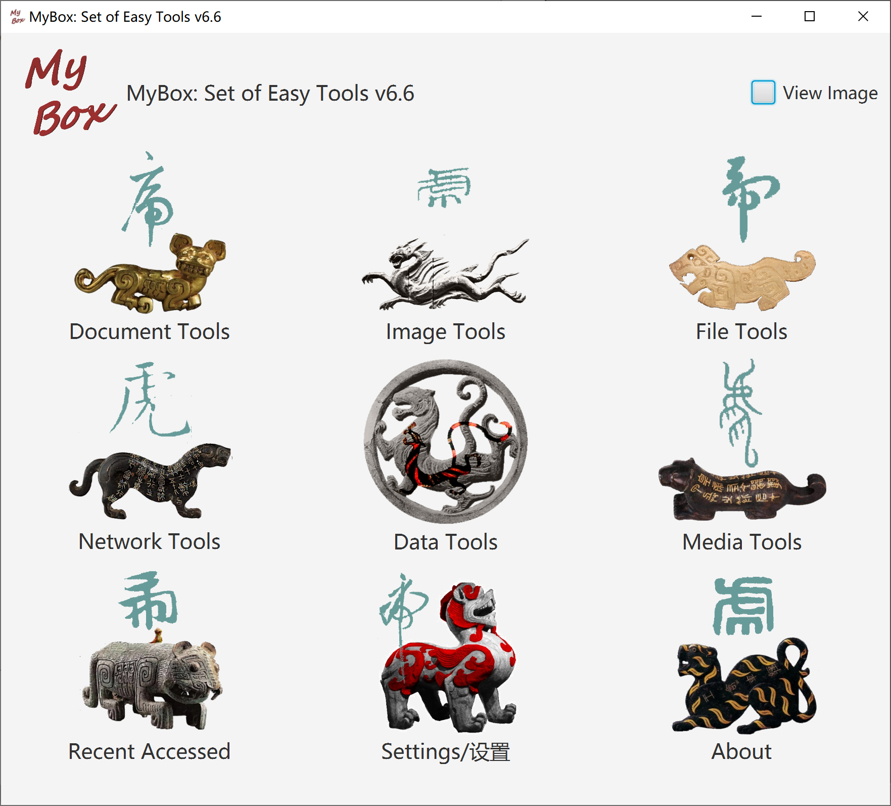
|
Contents |
Link |
|---|---|
|
Project Main Page |
|
|
Source Codes and Compiled Packages |
|
|
Submit Software Requirements and Problem Reports |
|
|
Data |
|
|
Documents |
|
|
Mirror Site |
|
|
Cloud Storage |
https://pan.baidu.com/s/1fWMRzym_jh075OCX0D8y8A#list/path=%2F |
|
Name |
Version |
Time |
English |
Chinese |
|---|---|---|---|---|
|
Development Logs |
6.6 |
2022-9-28 |
||
|
Shortcuts |
6.5.6 |
2022-6-11 |
||
|
Packing Steps |
6.3.3 |
2020-9-27 |
||
|
Development Guide |
2.1 |
2020-8-27 |
||
|
User Guide - Overview |
6.6 |
2022-9-28 |
||
|
User Guide - Document Tools |
6.6 |
2022-9-28 |
||
|
User Guide - Image Tools |
6.6 |
2022-9-28 |
||
|
User Guide - File Tools |
6.6 |
2022-9-28 |
||
|
User Guide - Network Tools |
6.6 |
2022-9-28 |
||
|
User Guide - Data Tools |
6.6 |
2022-9-28 |
||
|
User Guide - Media Tools |
6.6 |
2022-9-28 |
||
|
User Guide - Development Tools |
6.6 |
2022-9-28 |
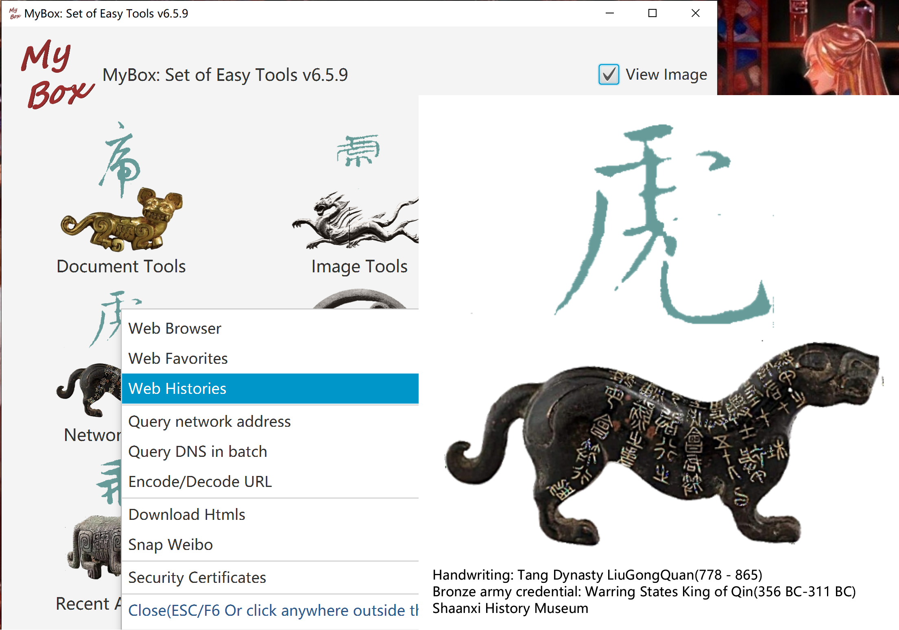
Display pages in multiple tabs
Functions menu.
Set operation when left click link or image in html.
Set web page as editable.
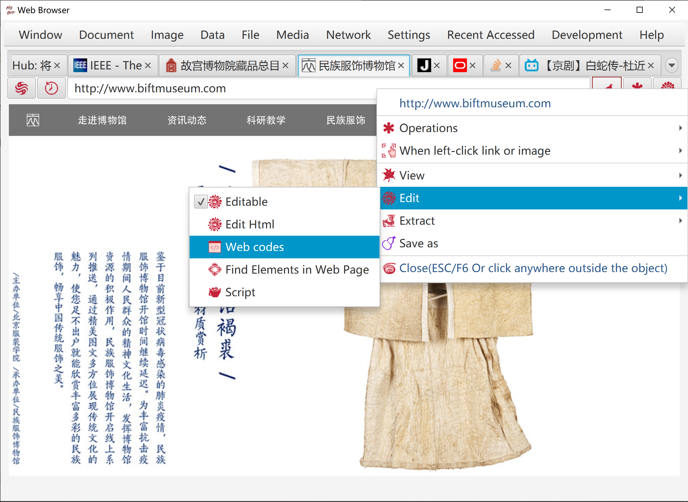
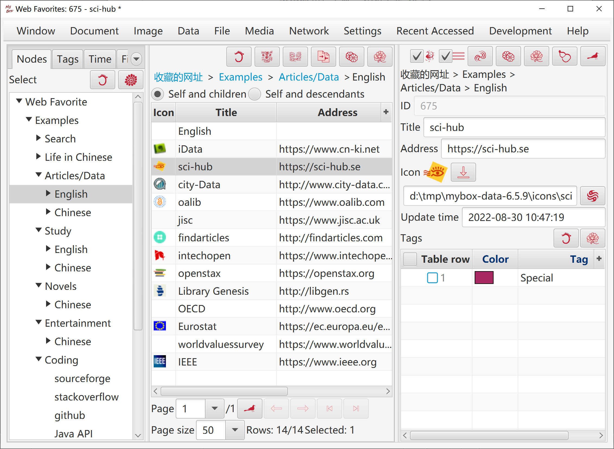
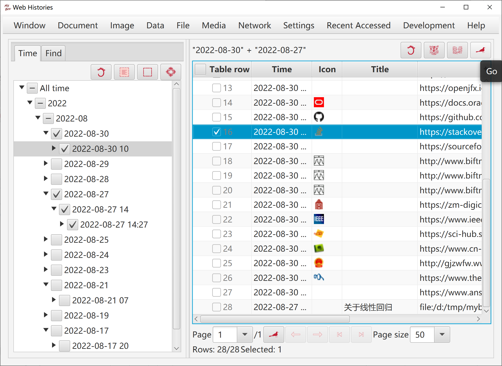
Query URL/host/IP
Select: local information, query of ipaddress.com, query of ip.taobao.com
View/Save SSL certifcate.
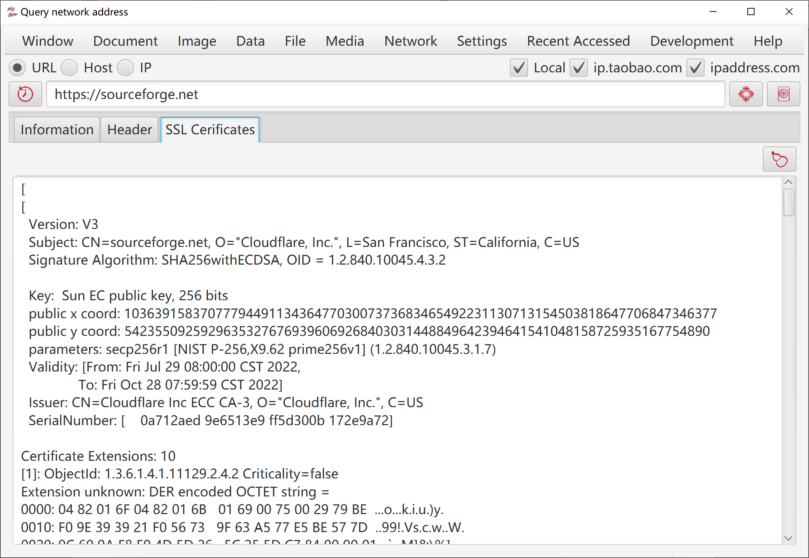
Input hosts/ips list. Example is provided.
Open file "hosts".
Execute command to refresh DNS.
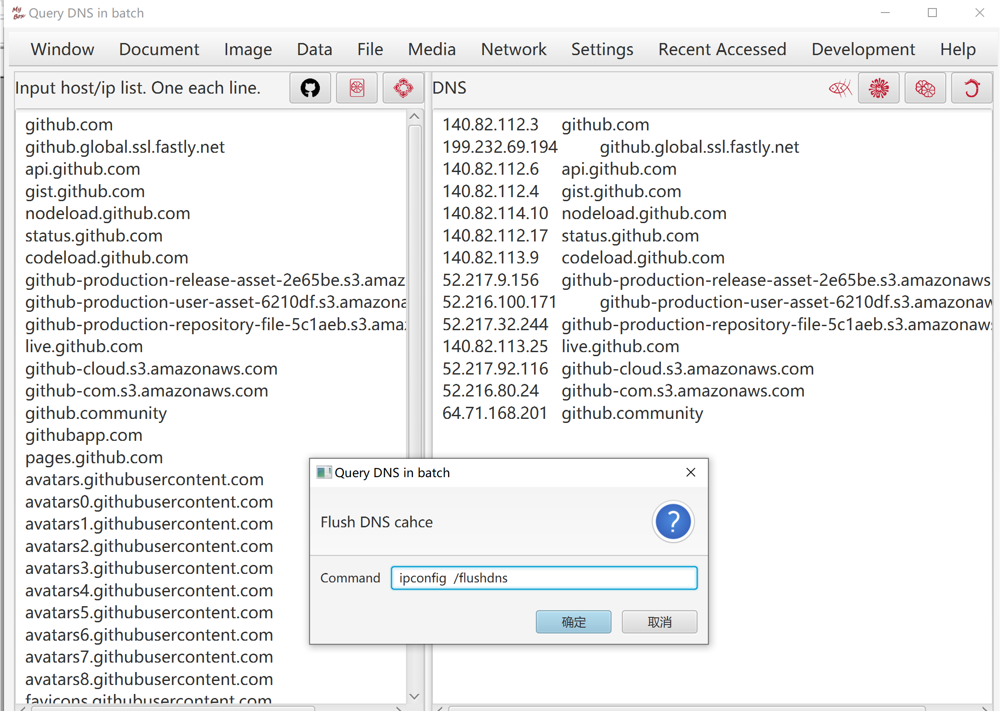
This tool helps to convert a string from/to the application/x-www-form-urlencoded MIME format.
The following rules are applied for encoding:
The alphanumeric characters "a" through "z", "A" through "Z" and "0" through "9" remain the same.
The special characters ".", "-", "*", and "_" remain the same.
The space character " " is converted into a plus sign "+".
All other characters are unsafe and are first converted into one or more bytes using some encoding scheme.
Then each byte is represented by the 3-character string "%xy", where xy is the two-digit hexadecimal representation of the byte.
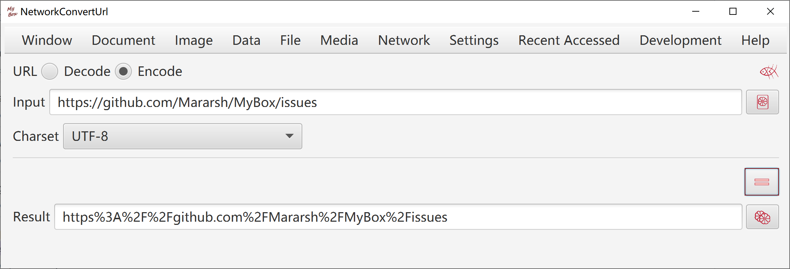
Decoding does reverse conversion.
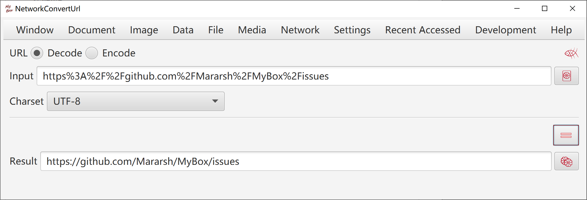
List first level links for given web address.
Download web pages of selected links:
Select useful links. Nonsense links can create unwanted files and disturb final path index.
Use function "Set subdirectory name" to make subdirectory's name reasonbale.
Use functions "Set link name/title/address as file name" to make filenames meaningful.
Use function "Add order number before filename" to help filenames ordered.
MyBox can order names like "xxx9", "xxx36", "xxx157" correctly.
Options: Rewrite links in pages, Generate path index, Change pages' encoding, Merge as texts/html/Markdown/PDF.
Page style and PDF font files can be set.
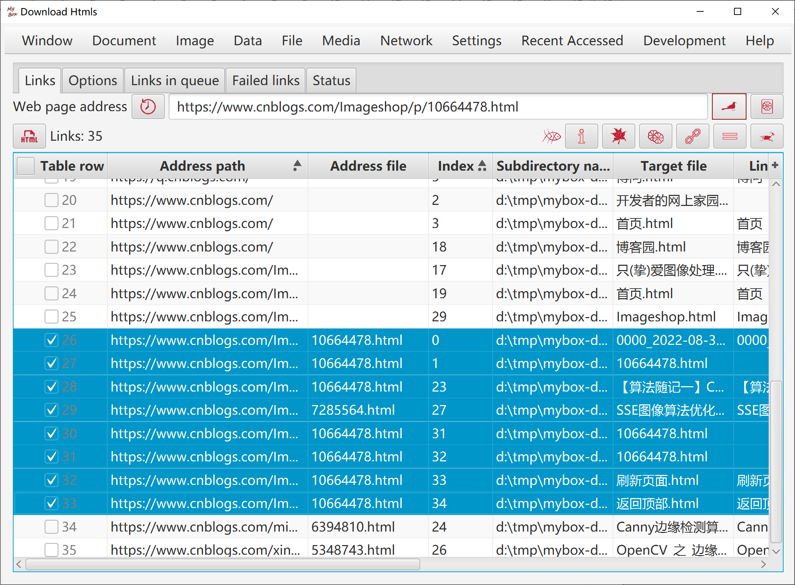
This tool fails to work now.
Save Weibo pages of any months of any Weibo accounts automatically. Pages which the account liked can be snapped and saved too.
Set the months range.
Make sure whole page contents loaded. Can expand the comments and pictures in the pages.
Save the pages as local html files which can not be loaded normally due to dynamic loading of WeiBo contents. They can be used to extract texts in the pages.
Save the pages' snapshots as PDF files, with options like dpi, format, page size, margins, author, etc.
Save all original size pictures in the pages.
Display progress information in time.
Stop the progress at any time. The interrupted month will be record and input as start month for next execution.
Set the retry times of failure.
Initialize webview when run at first time. Click button "SSL" if miss this step.
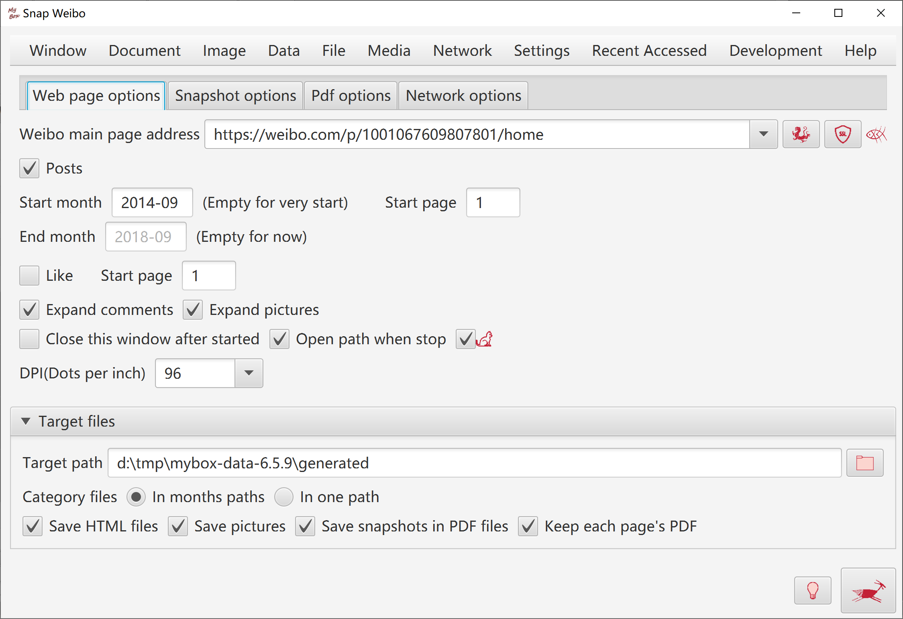
Read certificates in any keystore/truststore, and export as html file.
Add/Read cerificates in any CA files.
Download and install cerificates of any websites.
Delete certifcates in keystore/truststore.
Backup keystore/truststore automatically when update.
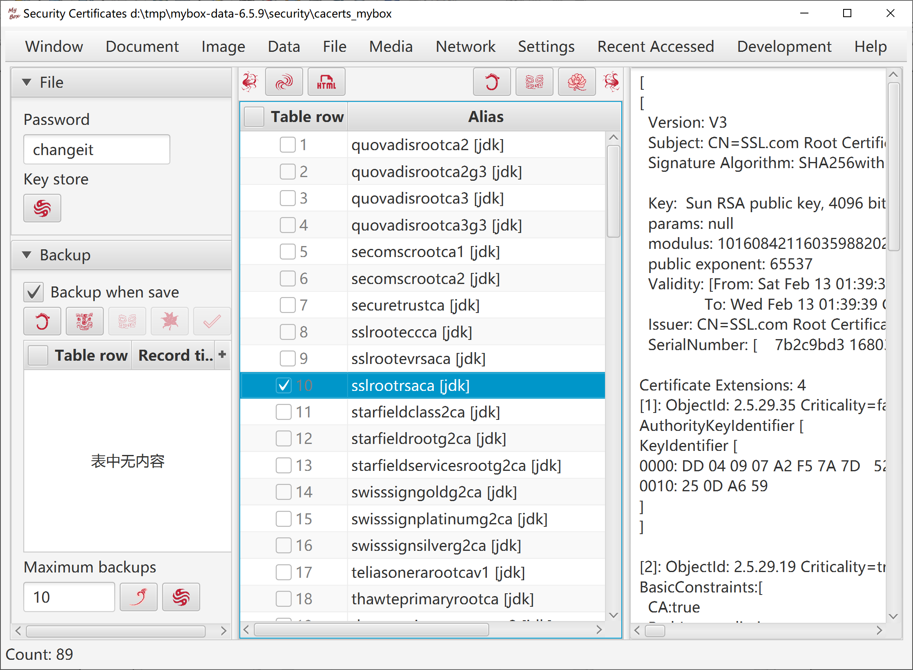
<End of Document>
Page